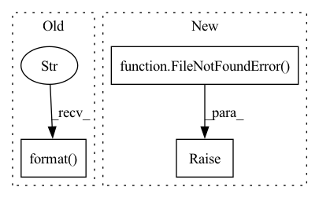

Pattern ID :31153
Before Change
command_status = os.system(mount_command)
if command_status == 256:
raise OSError(
"mount {} on {} error! Needs SUDO! Please mount manually: {}".format(
C["provider_uri"], C["mount_path"], mount_command
)
)
elif command_status == 32512:
// LOG.error("Command error")
raise OSError("mount {} on {} error! Command error".format(C["provider_uri"], C["mount_path"]))After Change
// It will be a nfs path. The client provider will be used
if not C["auto_mount"]:
if not os.path.exists(C["mount_path"]):
raise FileNotFoundError(
f"Invalid mount path: {C["mount_path"]}! Please mount manually: {mount_command} or Set init parameter `auto_mount=True`"
)
else:
// Judging system type
sys_type = platform.system()
if "win" in sys_type.lower():In pattern: SUPERPATTERN
Frequency: 3
Non-data size: 3
Instances Fragment ID: 91469554
Project Name: microsoft/qlib
Commit Name: ea5f14ce124fb7f20b76279de2dbb07302a2546f
Time: 2020-11-13
Author: dw1920@nyu.edu
File Name: qlib/__init__.py
M Class Name: AnonimousClass
N Class Name: AnonimousClass
M Method Name: _mount_nfs_uri(1)
N Method Name: _mount_nfs_uri(1)
M Parent Class:
N Parent Class:
M File Name: qlib/__init__.py
N File Name: qlib/__init__.py
M Start Line: 99
M End Line: 188
N Start Line: 104
N End Line: 182
Before Change
paths = glob.glob(pattern)
paths.sort()
if not paths == 0 or len(paths) == 1 and "init" in paths[0]:
raise FileNotFoundError("Could not find valid pretrain state file in {}".format( output_directory) )
else:
return paths[-1]
After Change
paths_by_epoch[match.group(1)] = path
if len(paths_by_epoch) == 0:
raise FileNotFoundError( "Could not find valid pre-train state file in {}".format(output_directory))
max_epoch = max(paths_by_epoch.keys())
return paths_by_epoch[max_epoch]
Fragment ID: 91469552
Project Name: sungnyun/understanding-cdfsl
Commit Name: aa94f9f7024b4379014c461bc968897a5b8b86dc
Time: 2021-12-27
Author: itsnamgyu@gmail.com
File Name: paths.py
M Class Name: AnonimousClass
N Class Name: AnonimousClass
M Method Name: get_final_pretrain_state_path(1)
N Method Name: get_final_pretrain_state_path(1)
M Parent Class:
N Parent Class:
M File Name: paths.py
N File Name: paths.py
M Start Line: 78
M End Line: 85
N Start Line: 79
N End Line: 92
Before Change
`root`; directories are included but have a file size of 0.
root = os.fspath(root)
check_true(os.path.isdir(root), "{} must be an extant directory".format( root) )
result = {}
for cur_path, sub_dirs, files in os.walk(root):
for d in sub_dirs:After Change
root = os.fspath(root)
if not os.path.exists(root):
raise FileNotFoundError( root)
if not os.path.isdir(root):
raise NotADirectoryError(root)
result = {}
for cur_path, sub_dirs, files in os.walk(root): Fragment ID: 91469550
Project Name: determined-ai/determined
Commit Name: d5e793ba19dcdc440ef1ea14c709fb4c38a46ab4
Time: 2022-04-14
Author: rb@hpe.com
File Name: harness/determined/common/storage/base.py
M Class Name: StorageManager
N Class Name: StorageManager
M Method Name: _list_directory(1)
N Method Name: _list_directory(1)
M Parent Class:
N Parent Class:
M File Name: harness/determined/common/storage/base.py
N File Name: harness/determined/common/storage/base.py
M Start Line: 106
M End Line: 107
N Start Line: 108
N End Line: 113